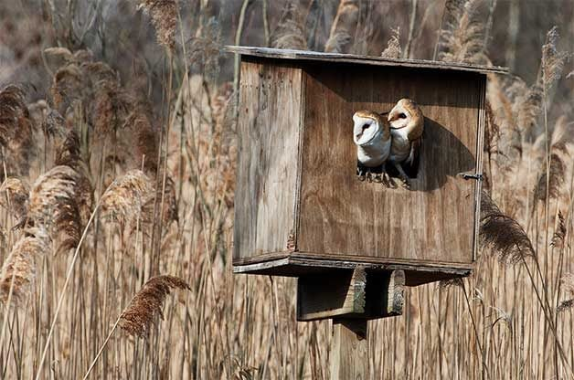
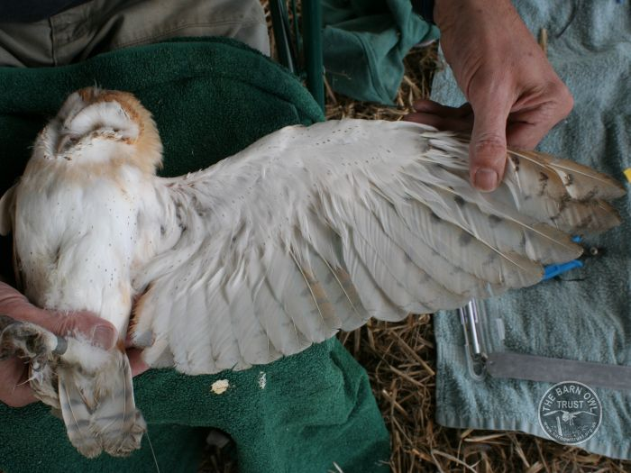
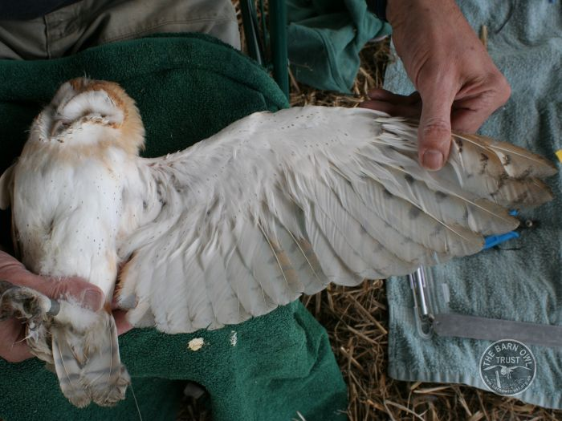

Tyto alba, also known as the barn owl, is a species of owl that exists on every continent except Antarctica. In Pennsylvania, barn owls have historically been associated with open agricultural landscapes, where old barns, meadows, and hayfields provided the hunting and nesting opportunities they depend on. This species is specially adapted for low-light hunting, using silent flight and exceptional hearing to locate small mammals in dense grass. Throughout the Commonwealth, barn owls were once a familiar sight around traditional family farms that maintained extensive pasture and hay acreage. Their preference for open fields made Pennsylvania’s agricultural valleys ideal habitat during much of the 19th and early 20th centuries. As farmland has changed, however, the availability of secure nesting structures and high-quality foraging habitat has steadily declined. Modern barns are often sealed, metal-sided, or converted to uses that do not accommodate nesting owls. At the same time, grassy meadows and fencerow habitats have diminished, reducing the prey base that barn owls rely on. Today, barn owls persist mainly in regions where open habitat remains intact, and where landowners continue to support nesting opportunities and grassland conservation.
To combat the changes in barn construction and the resulting loss of suitable nesting spaces, conservation organizations recommend that landowners who possess property with appropriate barn owl habitat install nest boxes in or around their barns. Providing artificial nesting structures helps offset the decline in traditional roosting sites and offers barn owls safe, elevated cavities in which to breed and raise their young. When placed in areas with open farmland, pasture, or grassland—habitats rich in small mammals—these nest boxes can significantly increase local nesting success and support the long-term stability of barn owl populations. Additionally, maintaining or enhancing surrounding foraging habitat further improves the effectiveness of nest box programs, making them an important management tool in regions where natural nesting sites have become scarce.

Tyto alba is a Species of Greatest Conservation Need (SGCN) in Pennsylvania. This is likely attributed to:
The Pennsylvania Game Commission identifies habitat loss as the primary factor behind the species’ decline. As traditional farms transitioned to intensive row-crop agriculture, the grassy fields that supported high vole and mouse populations disappeared. At the same time, many historic barns and silos were removed or sealed, eliminating safe nesting and roosting structures. Modern rodent control methods, including second-generation anticoagulant rodenticides, also contribute to mortality in owls that consume poisoned prey. Together, these pressures have led to a long-term reduction in barn owl numbers across much of the Commonwealth.
In response, the PGC established the Barn Owl Conservation Initiative (BOCI) in the mid-2000s to document current occurrences and to take applied conservation actions where possible. The Initiative compiles reports of nest sites and sightings, helps landowners and volunteers install and monitor artificial nest boxes, and coordinates banding and monitoring to track productivity, dispersal, and survival. Between 2005 and 2020 the PGC and regional partners confirmed many nest sites, installed nest boxes, and banded hundreds of owls as part of a coordinated effort to better understand distribution and reproductive success.
Banding is a key component of the PGC’s monitoring approach. Biologists place standard metal bands on nestlings at banding age to obtain unique identifiers that can later reveal movement, longevity, and population connections when banded individuals are re-encountered or recovered. Banding is paired with nest monitoring, occasional genetic and diet sampling, and careful record-keeping so that managers can evaluate whether nest boxes, habitat work, or other interventions are producing measurable benefits to local barn owl populations.
 

The Pennsylvania Game Commission (PGC) plays a central role in monitoring and conserving barn owl populations across the state. As agricultural landscapes change and traditional nesting structures decline, the PGC has increased efforts to better understand barn owl distribution, habitat use, and long-term population trends. One of the most effective tools now incorporated into their monitoring programs is the use of Autonomous Recording Units (ARUs). These devices allow biologists to collect continuous, non-invasive acoustic data across large geographic areas, capturing the nocturnal vocalizations of barn owls that might otherwise be missed through traditional survey methods. Because barn owls are secretive, low-density, and primarily active at night, ARUs offer a powerful way to detect their presence without disturbing them or relying solely on opportunistic sightings.
ARU surveys are particularly valuable for barn owl conservation because they provide reliable information about breeding activity, territory occupancy, and seasonal movements. By deploying ARUs near suitable grassland or agricultural habitats—and especially around barns, silos, and nest box sites—biologists can monitor whether owls are using these areas for foraging or nesting. ARUs can also help identify previously unknown populations, track changes in distribution over time, and measure the success of conservation efforts such as nest box installation or habitat restoration. Combined with PGC’s broader wildlife management strategies, ARU data allow conservationists to make informed decisions about habitat protection, landowner outreach, and adaptive management. Ultimately, ARU surveys enhance the Game Commission’s ability to support stable barn owl populations in Pennsylvania by providing a detailed, science-driven understanding of where these birds thrive and how best to protect them.


This is the bottom.